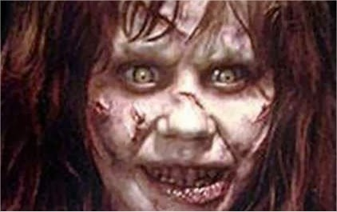
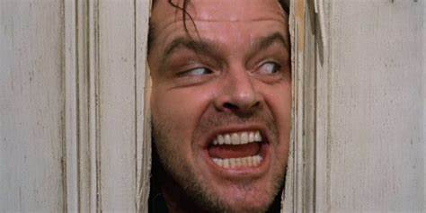
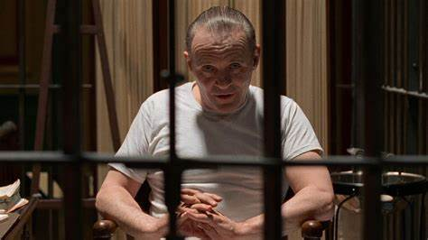
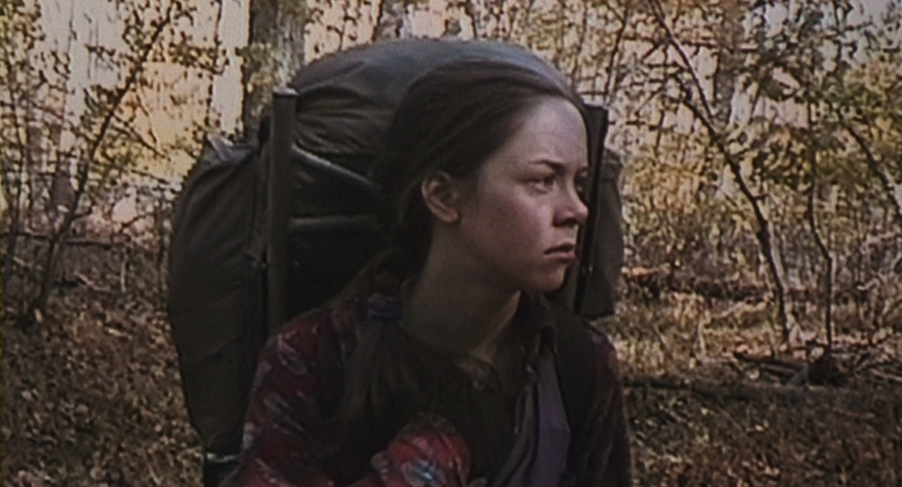
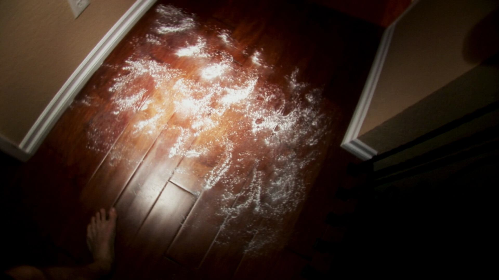
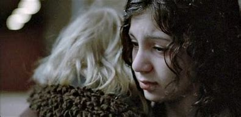

Dato curioso: Durante el rodaje, se informó de varios eventos extraños y accidentes, lo que llevó a creer en la "maldición del exorcista".
El Exorcista (1973)

Dato curioso: La película es conocida por su icónica escena de las gemelas en el pasillo, así como por su interpretación ambigua y las teorías sobre su significado.
El Resplandor (1980)

Dato curioso: "El Silencio de los Corderos" es una de las pocas películas en ganar los cinco premios principales de los Oscar: Mejor Película, Mejor Director, Mejor Actor, Mejor Actriz y Mejor Guion Adaptado.
El Silencio de los Corderos (1991)

Dato curioso: Con un presupuesto extremadamente bajo, la película se convirtió en un fenómeno cultural y fue pionera en el género de "metraje encontrado".
El Proyecto de la Bruja de Blair (1999)

Dato curioso: Con un presupuesto mínimo, "Actividad Paranormal" se convirtió en un éxito sorpresa y generó una exitosa franquicia.
Actividad Paranormal (2007)

Dato curioso: La película fue aclamada por la crítica y recibió varias nominaciones y premios, destacando su enfoque sensible en la historia de vampiros.
Déjame Entrar (2008)